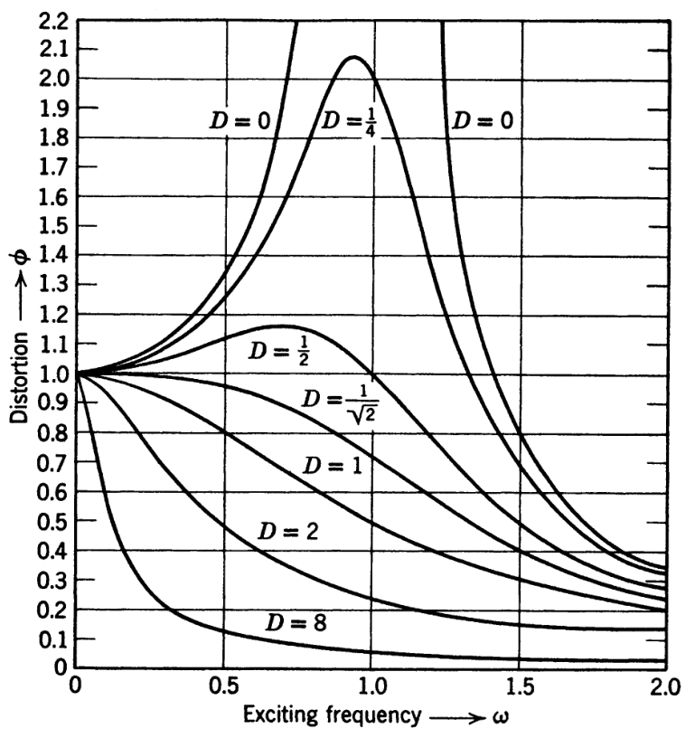

a. 一般说明。叠加原理
在着手求解有外力 f ( t ) f(t) f ( t )
如果 w w w v v v u = w − v u=w-v u = w − v u u u v v v w = u + v w=u+v w = u + v 全部 解。我们只需要求出非齐次方程的一个 解。从物理上说，假如外力已经引起了一个受迫振动，在它上面叠加任意一个自由振动（即齐次方程的一个解），所得运动仍满足原先那个受迫振动所满足的非齐次方程。如果有摩擦，在发生振荡的情形，自由运动由于带有阻尼因子 e − r t / 2 m e^{-rt/2m} e − r t /2 m
原注 1（第 640 页） 这个解常称为特积分 或特解 。
其次，一个力 f ( t ) f(t) f ( t ) f 1 ( t ) f_1(t) f 1 ( t ) f 2 ( t ) f_2(t) f 2 ( t ) f ( t ) f(t) f ( t )
f 1 ( t ) + f 2 ( t ) = f ( t ) .
f_1(t)+f_2(t)=f(t).
f 1 ( t ) + f 2 ( t ) = f ( t ) . 若 x 1 = x 1 ( t ) x_1=x_1(t) x 1 = x 1 ( t ) m x ¨ + r x ˙ + k x = f 1 ( t ) m\ddot x+r\dot x+kx=f_1(t) m x ¨ + r x ˙ + k x = f 1 ( t ) x 2 = x 2 ( t ) x_2=x_2(t) x 2 = x 2 ( t ) m x ¨ + r x ˙ + k x = f 2 ( t ) m\ddot x+r\dot x+kx=f_2(t) m x ¨ + r x ˙ + k x = f 2 ( t ) x ( t ) = x 1 ( t ) + x 2 ( t ) x(t)=x_1(t)+x_2(t) x ( t ) = x 1 ( t ) + x 2 ( t )
m x ¨ + r x ˙ + k x = f ( t ) (7)
m\ddot x+r\dot x+kx=f(t) \tag{7}
m x ¨ + r x ˙ + k x = f ( t ) ( 7 ) 的解。当然，如果 f ( t ) f(t) f ( t ) 叠加原理 ，证明只须看一眼方程本身就清楚了。把 f ( t ) f(t) f ( t )
最重要的是周期性外力 f ( t ) f(t) f ( t )
a cos ω t 或 b sin ω t
a\cos\omega t\qquad\text{或}\qquad b\sin\omega t
a cos ω t 或 b sin ω t 的微分方程，其中 a a a b b b ω \omega ω
原注 1（第 641 页） 这里假设函数连续且分段光滑（第 604 页），这是物理学中最重要的情形。
采用复数记法可以把求解过程写得更简单明了。置 f ( t ) = c e i ω t f(t)=ce^{i\omega t} f ( t ) = c e iω t
m x ¨ + r x ˙ + k x = c e i ω t , (8)
m\ddot x+r\dot x+kx=ce^{i\omega t}, \tag{8}
m x ¨ + r x ˙ + k x = c e iω t , ( 8 ) 其中 c c c c = 1 c=1 c = 1 e i ω t = cos ω t + i sin ω t e^{i\omega t}=\cos\omega t+i\sin\omega t e iω t = cos ω t + i sin ω t x 1 x_1 x 1 x 2 x_2 x 2 m x ¨ + r x ˙ + k x = cos ω t m\ddot x+r\dot x+kx=\cos\omega t m x ¨ + r x ˙ + k x = cos ω t m x ¨ + r x ˙ + k x = sin ω t m\ddot x+r\dot x+kx=\sin\omega t m x ¨ + r x ˙ + k x = sin ω t x = x 1 + i x 2 x=x_1+ix_2 x = x 1 + i x 2 x 1 x_1 x 1 x 2 x_2 x 2
b. 非齐次方程的解
求解方程 (8) 的方法，从直观上便可想到。假设 c c c r ≠ 0 r\ne0 r = 0
x = σ e i ω t (9)
x=\sigma e^{i\omega t} \tag{9}
x = σ e iω t ( 9 ) 的解，其中只须确定与时间无关的因子 σ \sigma σ x ˙ = i ω σ e i ω t \dot x=i\omega\sigma e^{i\omega t} x ˙ = iωσ e iω t x ¨ = − ω 2 σ e i ω t \ddot x=-\omega^2\sigma e^{i\omega t} x ¨ = − ω 2 σ e iω t e i ω t e^{i\omega t} e iω t
− m ω 2 σ + i r ω σ + k σ = c ,
-m\omega^2\sigma+ir\omega\sigma+k\sigma=c,
− m ω 2 σ + i r ωσ + kσ = c , 即
σ = c − m ω 2 + i r ω + k . (10)
\sigma=\frac c{-m\omega^2+ir\omega+k}. \tag{10}
σ = − m ω 2 + i r ω + k c . ( 10 ) 反过来，当 σ \sigma σ σ e i ω t \sigma e^{i\omega t} σ e iω t σ \sigma σ
σ = c k − m ω 2 − i r ω ( k − m ω 2 ) 2 + r 2 ω 2 = c α e − i ω δ , (11)
\sigma=c\frac{k-m\omega^2-ir\omega}{(k-m\omega^2)^2+r^2\omega^2}
=c\alpha e^{-i\omega\delta}, \tag{11}
σ = c ( k − m ω 2 ) 2 + r 2 ω 2 k − m ω 2 − i r ω = c α e − iω δ , ( 11 ) 其中正数 α \alpha α ω δ \omega\delta ω δ m m m r r r k k k
α 2 = 1 ( k − m ω 2 ) 2 + r 2 ω 2 , sin ω δ = r ω α , cos ω δ = ( k − m ω 2 ) α .
\alpha^2=\frac1{(k-m\omega^2)^2+r^2\omega^2},\qquad
\sin\omega\delta=r\omega\alpha,\qquad \cos\omega\delta=(k-m\omega^2)\alpha.
α 2 = ( k − m ω 2 ) 2 + r 2 ω 2 1 , sin ω δ = r ω α , cos ω δ = ( k − m ω 2 ) α . 用这些记号，我们的解便为
x = c α e i ω ( t − δ ) .
x=c\alpha e^{i\omega(t-\delta)}.
x = c α e iω ( t − δ ) . 这就是说，力 c cos ω t c\cos\omega t c cos ω t c α cos ω ( t − δ ) c\alpha\cos\omega(t-\delta) c α cos ω ( t − δ ) c sin ω t c\sin\omega t c sin ω t c α sin ω ( t − δ ) c\alpha\sin\omega(t-\delta) c α sin ω ( t − δ )
可见，响应与外力是同一类型的函数，是一种振幅不随时间衰减的振动。与代表外力的振动相比，响应的振幅按 α : 1 \alpha:1 α : 1 ω δ \omega\delta ω δ
根据本节开头的说明，求得这一个解，就已经把问题完全解决了。只要再叠加任意一个自由振动，就得到最一般的受迫振动。
将所得结果合在一起，可以表述如下。微分方程
m x ¨ + r x ˙ + k x = c e i ω t
m\ddot x+r\dot x+kx=ce^{i\omega t}
m x ¨ + r x ˙ + k x = c e iω t （其中 x ≠ 0 x\ne0 x = 0 x = c α e i ω ( t − δ ) + u x=c\alpha e^{i\omega(t-\delta)}+u x = c α e iω ( t − δ ) + u u u u m x ¨ + r x ˙ + k x = 0 m\ddot x+r\dot x+kx=0 m x ¨ + r x ˙ + k x = 0 α \alpha α δ \delta δ
α 2 = 1 ( k − m ω 2 ) 2 + r 2 ω 2 , sin ω δ = r ω α , cos ω δ = ( k − m ω 2 ) α . (12)
\alpha^2=\frac1{(k-m\omega^2)^2+r^2\omega^2},\qquad
\sin\omega\delta=r\omega\alpha,\qquad \cos\omega\delta=(k-m\omega^2)\alpha. \tag{12}
α 2 = ( k − m ω 2 ) 2 + r 2 ω 2 1 , sin ω δ = r ω α , cos ω δ = ( k − m ω 2 ) α . ( 12 ) 通解中的常数可供我们选取，以适应任何给定的初始状态。也就是说，任意指定 x 0 x_0 x 0 x ˙ 0 \dot x_0 x ˙ 0 x ( 0 ) = x 0 x(0)=x_0 x ( 0 ) = x 0 x ˙ ( 0 ) = x ˙ 0 \dot x(0)=\dot x_0 x ˙ ( 0 ) = x ˙ 0
译者注 这段括号中的 x ≠ 0 x\ne0 x = 0 r ≠ 0 r\ne0 r = 0 r = 0 r=0 r = 0
c. 共振曲线
为了弄清所求的解及其在应用中的意义，我们来研究失真因子 α \alpha α ω \omega ω
ϕ ( ω ) = 1 ( k − m ω 2 ) 2 + r 2 ω 2 . (13)
\phi(\omega)=\frac1{\sqrt{(k-m\omega^2)^2+r^2\omega^2}}. \tag{13}
ϕ ( ω ) = ( k − m ω 2 ) 2 + r 2 ω 2 1 . ( 13 ) 值得仔细研究这个函数，是因为即使常数 k k k m m m r r r ω 0 = k / m \omega_0=\sqrt{k/m} ω 0 = k / m r r r ω 0 \omega_0 ω 0 无阻尼系统的固有频率 （参见第 639 页）。有摩擦 r r r ω 0 \omega_0 ω 0
ν = k m − r 2 4 m 2 .
\nu=\sqrt{\frac km-\frac{r^2}{4m^2}}.
ν = m k − 4 m 2 r 2 . 这里假设 4 k m − r 2 > 0 4km-r^2>0 4 km − r 2 > 0
当激振频率趋于无穷大时，函数 ϕ ( ω ) \phi(\omega) ϕ ( ω ) 1 / ω 2 1/\omega^2 1/ ω 2 ϕ ( 0 ) = 1 / k \phi(0)=1/k ϕ ( 0 ) = 1/ k 1 / k 1/k 1/ k ω > 0 \omega>0 ω > 0 ( k − m ω 2 ) 2 + r 2 ω 2 (k-m\omega^2)^2+r^2\omega^2 ( k − m ω 2 ) 2 + r 2 ω 2 ϕ ′ ( ω ) \phi'(\omega) ϕ ′ ( ω ) ω = ω 1 > 0 \omega=\omega_1>0 ω = ω 1 > 0
− 4 m ω ( k − m ω 2 ) + 2 r 2 ω = 0.
-4m\omega(k-m\omega^2)+2r^2\omega=0.
− 4 mω ( k − m ω 2 ) + 2 r 2 ω = 0. 要有这样的值，显然必须满足 2 k m − r 2 > 0 2km-r^2>0 2 km − r 2 > 0
ω 1 = k m − r 2 2 m 2 = ω 0 2 − r 2 2 m 2 .
\omega_1=\sqrt{\frac km-\frac{r^2}{2m^2}}=\sqrt{\omega_0^2-\frac{r^2}{2m^2}}.
ω 1 = m k − 2 m 2 r 2 = ω 0 2 − 2 m 2 r 2 . 函数 ϕ ( ω ) \phi(\omega) ϕ ( ω ) ω \omega ω ω 1 \omega_1 ω 1 ω 1 \omega_1 ω 1 共振频率 。
将 ω 1 \omega_1 ω 1
ϕ ( ω 1 ) = 1 r ( k / m − r 2 / 4 m 2 ) .
\phi(\omega_1)=\frac1{r\sqrt{(k/m-r^2/4m^2)}}.
ϕ ( ω 1 ) = r ( k / m − r 2 /4 m 2 ) 1 . 当 r → 0 r\to0 r → 0 r = 0 r=0 r = 0 ϕ ( ω ) \phi(\omega) ϕ ( ω ) ω = ω 1 \omega=\omega_1 ω = ω 1
函数 ϕ ( ω ) \phi(\omega) ϕ ( ω ) 共振曲线 。当 ω = ω 1 \omega=\omega_1 ω = ω 1 r r r α = ϕ ( ω ) \alpha=\phi(\omega) α = ϕ ( ω ) m m m k k k r r r
图 9.3 画出了一族共振曲线。所有曲线均取 m = 1 m=1 m = 1 k = 1 k=1 k = 1 ω 0 = 1 \omega_0=1 ω 0 = 1 D = 1 2 r D=\tfrac12 r D = 2 1 r D D D ω = 1 \omega=1 ω = 1 D = 0 D=0 D = 0 ϕ ( ω ) \phi(\omega) ϕ ( ω ) ω = 1 \omega=1 ω = 1

图 9.3 共振曲线。横轴为激振频率，纵轴为振幅的失真因子 随着 D D D D = 1 / 2 D=1/\sqrt2 D = 1/ 2 ω 1 = 0 \omega_1=0 ω 1 = 0 D > 1 / 2 D>1/\sqrt2 D > 1/ 2 ϕ ′ ( ω ) \phi'(\omega) ϕ ′ ( ω )
一般地，只要条件
2 k m − r 2 ≤ 0
2km-r^2\le0
2 km − r 2 ≤ 0 成立，共振现象就消失。取等号时，共振曲线在 ω 1 = 0 \omega_1=0 ω 1 = 0 ϕ ( 0 ) = 1 / k \phi(0)=1/k ϕ ( 0 ) = 1/ k
译者注 这里有三个不同的角频率。ω 0 \omega_0 ω 0 ν \nu ν ω 1 \omega_1 ω 1 r > 0 r>0 r > 0 ω 1 < ν < ω 0 \omega_1<\nu<\omega_0 ω 1 < ν < ω 0
d. 振动的进一步讨论
要真正理解受迫运动，还有一点必须强调。应当把特积分 c α e i ω ( t − δ ) c\alpha e^{i\omega(t-\delta)} c α e iω ( t − δ )
x ( t ) = c α e i ω ( t − δ ) + c 1 u 1 + c 2 u 2
x(t)=c\alpha e^{i\omega(t-\delta)}+c_1u_1+c_2u_2
x ( t ) = c α e iω ( t − δ ) + c 1 u 1 + c 2 u 2 随时间推移 而越来越接近的极限状态 。这是因为叠加在特积分上的自由振动 c 1 u 1 + c 2 u 2 c_1u_1+c_2u_2 c 1 u 1 + c 2 u 2 r r r r r r
例如，设运动开始时，即 t = 0 t=0 t = 0 x ( 0 ) = 0 x(0)=0 x ( 0 ) = 0 x ˙ ( 0 ) = 0 \dot x(0)=0 x ˙ ( 0 ) = 0 c 1 c_1 c 1 c 2 c_2 c 2 ω 1 \omega_1 ω 1 α = ϕ ( ω 1 ) \alpha=\phi(\omega_1) α = ϕ ( ω 1 ) c 1 u 1 + c 2 u 2 c_1u_1+c_2u_2 c 1 u 1 + c 2 u 2 r r r
对于无阻尼系统，即 r = 0 r=0 r = 0 ω 0 = k / m \omega_0=\sqrt{k/m} ω 0 = k / m ϕ ( ω 0 ) \phi(\omega_0) ϕ ( ω 0 ) σ e i ω t \sigma e^{i\omega t} σ e iω t m x ¨ + k x = e i ω t m\ddot x+kx=e^{i\omega t} m x ¨ + k x = e iω t x = σ t e i ω t x=\sigma te^{i\omega t} x = σ t e iω t
x ˙ = σ e i ω t ( 1 + i ω t ) , x ¨ = σ e i ω t ( 2 i ω − t ω 2 ) ,
\dot x=\sigma e^{i\omega t}(1+i\omega t),\qquad
\ddot x=\sigma e^{i\omega t}(2i\omega-t\omega^2),
x ˙ = σ e iω t ( 1 + iω t ) , x ¨ = σ e iω t ( 2 iω − t ω 2 ) , 代入微分方程，有
σ ( 2 i m ω − m ω 2 t + k t ) = 1.
\sigma(2im\omega-m\omega^2t+kt)=1.
σ ( 2 imω − m ω 2 t + k t ) = 1. 由于 m ω 2 = k m\omega^2=k m ω 2 = k
σ = 1 2 i m ω .
\sigma=\frac1{2im\omega}.
σ = 2 imω 1 . 所以，无阻尼系统发生共振时，有一个解为
x = t 2 i m ω e i ω t = t 2 i k m e i ω t .
x=\frac t{2im\omega}e^{i\omega t}=\frac t{2i\sqrt{km}}e^{i\omega t}.
x = 2 imω t e iω t = 2 i km t e iω t . 改用实数记法，当 f ( t ) = cos ω t f(t)=\cos\omega t f ( t ) = cos ω t
x = 1 2 t k m sin ω t ;
x=\frac12\frac t{\sqrt{km}}\sin\omega t;
x = 2 1 km t sin ω t ; 当 f ( t ) = sin ω t f(t)=\sin\omega t f ( t ) = sin ω t
x = − 1 2 t k m cos ω t .
x=-\frac12\frac t{\sqrt{km}}\cos\omega t.
x = − 2 1 km t cos ω t . 这样得到的函数仍可以叫作振动，不过它的振幅随时间成正比地增长。叠加在它上面的自由振动没有阻尼，因而并不消退，但它始终保持原有的振幅。与这个受迫振动特解不断增长的振幅相比，自由振动就渐渐变得无足轻重。此时的解在一正一负两条界限之间来回振荡，两条界限的绝对值都随时间不断增大。无阻尼系统的共振函数在共振频率处有无穷间断，其真正含义就在这里。
e. 关于记录仪器设计的几点说明
上一小节的讨论，对物理学和工程技术中的许多应用极其重要。对于检流计、地震仪、无线电接收机中的振荡电路、话筒中的振膜等许多装置，要解决的问题都是记录外加周期力所引起的振动位移 x x x x x x
若外加周期力的振动周期为 T T T
f ( t ) = ∑ l = − ∞ ∞ γ l e i l ( 2 π / T ) t .
f(t)=\sum_{l=-\infty}^{\infty}\gamma_l e^{il(2\pi/T)t}.
f ( t ) = l = − ∞ ∑ ∞ γ l e i l ( 2 π / T ) t . 更切合实际的看法是，可以用仅含有限项的三角和 ∑ l = − N N γ l e i l ( 2 π / T ) t \sum_{l=-N}^{N}\gamma_l e^{il(2\pi/T)t} ∑ l = − N N γ l e i l ( 2 π / T ) t x ( t ) x(t) x ( t )
x ( t ) = ∑ l = − ∞ ∞ σ l e i l ( 2 π / T ) t ,
x(t)=\sum_{l=-\infty}^{\infty}\sigma_l e^{il(2\pi/T)t},
x ( t ) = l = − ∞ ∑ ∞ σ l e i l ( 2 π / T ) t , 也可用有限表达式近似表示为
x ( t ) = ∑ l = − N N σ l e i l ( 2 π / T ) t .
x(t)=\sum_{l=-N}^{N}\sigma_l e^{il(2\pi/T)t}.
x ( t ) = l = − N ∑ N σ l e i l ( 2 π / T ) t . 原注 1（第 647 页） 这里不讨论收敛性问题。
根据前面的结果，
σ l = γ l α l e − i δ l ( 2 π l / T ) ,
\sigma_l=\gamma_l\alpha_l e^{-i\delta_l(2\pi l/T)},
σ l = γ l α l e − i δ l ( 2 π l / T ) , 并且
α l 2 = 1 ( k − m l 2 4 π 2 T 2 ) 2 + r 2 l 2 4 π 2 T 2 , tan ( 2 π l T δ l ) = 2 π l r T ( k − m 4 π 2 l 2 T 2 ) .
\alpha_l^2=\frac1{\left(k-ml^2\dfrac{4\pi^2}{T^2}\right)^2+r^2l^2\dfrac{4\pi^2}{T^2}},
\qquad
\tan\left(\frac{2\pi l}{T}\delta_l\right)
=\frac{2\pi lr}{T\left(k-m\dfrac{4\pi^2l^2}{T^2}\right)}.
α l 2 = ( k − m l 2 T 2 4 π 2 ) 2 + r 2 l 2 T 2 4 π 2 1 , tan ( T 2 π l δ l ) = T ( k − m T 2 4 π 2 l 2 ) 2 π l r . 现在就可以描述任意周期性外力的作用了。将激振力分解成单一频率的周期分量，也就是傅里叶级数的各项，每个分量各自产生相应的振幅变化和相位移动，再将各自的响应相加。如果我们只关心振幅的失真（在应用中，相移的重要性通常居于其次，² 而且相移也可以用与振幅失真相同的方法研究），那么单凭共振曲线，就能完全了解记录仪器的运动怎样反映外部的激振力。当 l l l ω \omega ω = ( 2 π / T ) l =(2\pi/T)l = ( 2 π / T ) l x x x ω 1 \omega_1 ω 1 x x x
原注 2（第 648 页） 例如，人耳就觉察不到这种相移。
在设计物理测量和记录仪器时，常数 m m m r r r k k k ω \omega ω α \alpha α ω \omega ω α \alpha α 1 / k 1/k 1/ k 1 / k 1/k 1/ k 1 / k 1/k 1/ k
另一项重要要求是相对不失真 。设表示式 f ( t ) = ∑ l = − N N γ l e i l ( 2 π / T ) t f(t)=\sum_{l=-N}^{N}\gamma_l e^{il(2\pi/T)t} f ( t ) = ∑ l = − N N γ l e i l ( 2 π / T ) t ω ≤ N ( 2 π / T ) \omega\le N(2\pi/T) ω ≤ N ( 2 π / T ) f ( t ) f(t) f ( t )
要求重现的结果相对“不失真”，不可能做到绝对精确，因为共振曲线没有任何一段完全水平。不过，可以尽量选择适当的仪器常数 m m m k k k r r r φ ( ω ) = α \varphi(\omega)=\alpha φ ( ω ) = α ω \omega ω
2 k m − r 2 = 0.
2km-r^2=0.
2 km − r 2 = 0. 给定常数 m m m k k k r r r ω 0 \omega_0 ω 0 m m m k k k ω 0 \omega_0 ω 0 2 k m − r 2 = 0 2km-r^2=0 2 km − r 2 = 0 r r r
译者注 “相对不失真”允许所有频率的振幅一起放大或缩小，同一倍数可以在仪器标定时扣除。要求的是频率分量之间原有的振幅比得到保留。这里的 r 2 = 2 k m r^2=2km r 2 = 2 km r 2 = 4 k m r^2=4km r 2 = 4 km